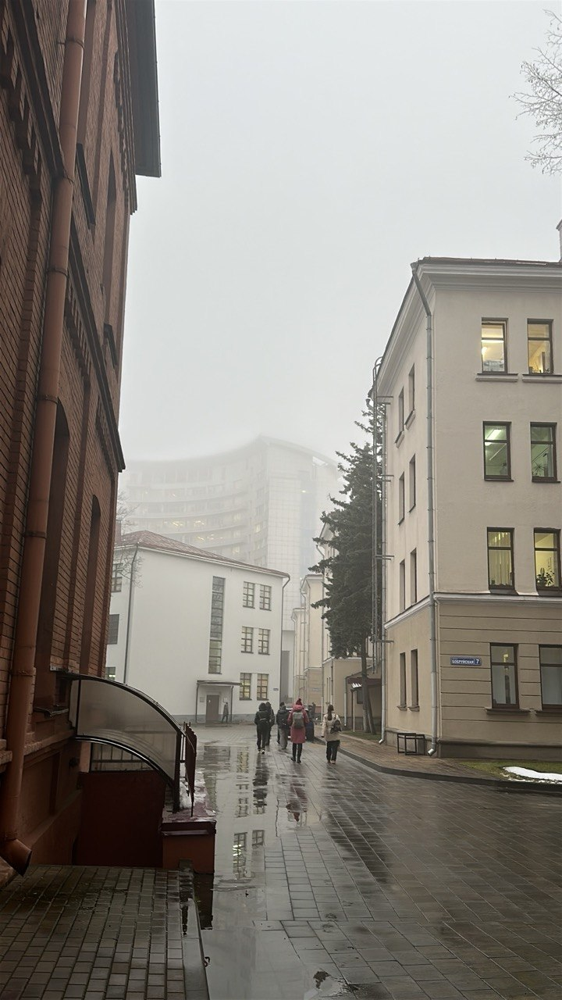

О проекте и его пользе
«Фото-места Минска» — это интерактивная веб-платформа для фотографов, блогеров и путешественников, которая помогает находить самые красивые и необычные локации города для съемок.

Что здесь можно делать:
Основные возможности платформы для пользователей
Искать на карте
Все точки нанесены на удобную интерактивную карту с группировкой (кластеризацией) меток, чтобы интерфейс оставался чистым.
Фильтровать по тегам
Искать места можно через строку поиска или систему хэштегов (например, #архитектура).
Читать и оставлять отзывы
У каждого места есть фото, описание, рейтинг и отзывы других пользователей.
Управлять контентом
Авторизованные пользователи могут сохранять точки в «Избранное», делиться мнением и предлагать на карту свои новые находки через личный кабинет.
2. Техническая реализация (Как всё устроено)
Мы разделили разработку на две части: фронтенд (клиентская визуальная сторона) и бэкенд (сервер и база данных).
💻 Фронтенд (Клиентская часть)
Мы сделали интерфейс отзывчивым, быстрым и работающим без лишних перезагрузок страниц:
- Интерактивная карта: Интегрировали карту OpenStreetMap с помощью библиотеки Leaflet.js. Настроили кластеризацию, чтобы маркеры не перекрывали друг друга.
- Динамический интерфейс: Используя JavaScript, связали фронтенд с сервером. Поиск, фильтрация, отправка отзывов и добавление в избранное происходят мгновенно.
- Личный кабинет: Реализовали удобную панель с вкладками, где пользователь видит свои подборки, может кастомизировать профиль (выбрать аватар) и прямо по клику на карту предложить новую точку.
⚙️ Бэкенд (Серверная часть)
Сервер отвечает за безопасность, обработку запросов и надежное хранение информации:
- Современный API: Сервер написан на фреймворке FastAPI (Python). Он быстро обрабатывает запросы от фронтенда и возвращает данные в формате JSON.
- База данных: Используется реляционная БД MySQL. В ней хранятся связанные таблицы пользователей, локаций, отзывов и избранного.
- Безопасность: Пароли пользователей не хранятся в открытом виде — они надежно хэшируются через bcrypt. Также мы добавили логику входа по временному коду, если пользователь забыл свой пароль.
3. Выводы
В ходе работы мы успешно создали полноценный сайт, решив все архитектурные и интерфейсные задачи.
Мы получили отличный практический опыт в связывании клиентской и серверной частей, проектировании баз данных, работе с интерактивными картами и реализации безопасной авторизации. Проект полностью готов к использованию и легко поддается масштабированию.